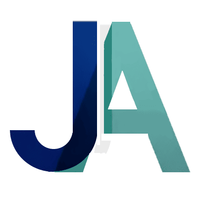

 Hola soy Juan Artigas
Desarrollador apasionado por la programación y el diseño, con mente creativa.
Descarga CV
Ayuda Visual
Predefinida
Dyslexia
Vision reducida
TDAH
Modo Claro / Oscuro
Títulos / Certificados
Portfolio / Proyectos
Contacto / Redes
menus
Datos Personales
Experiencias Laborales
« « Clic en cada titulo para ampliar » »
Sobre Mi
Formaciones
Habilidades
close
close